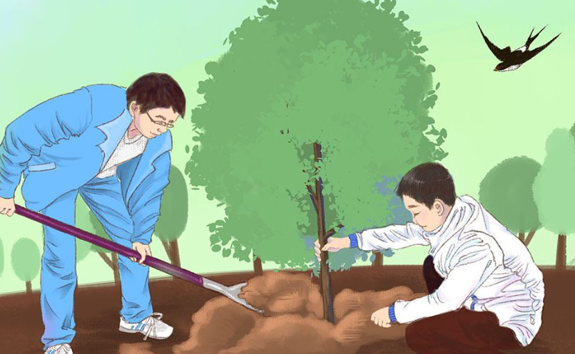
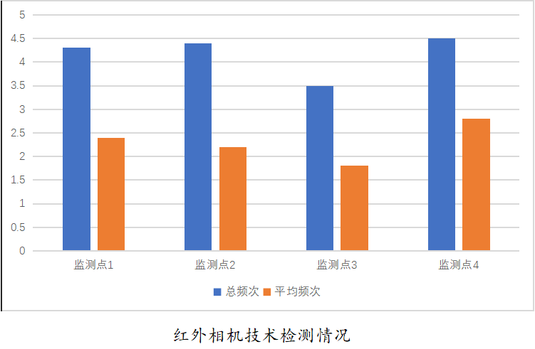

-

调查的具体操作
根据查阅到的背景资料
在查阅背景资料的同时，能够大概掌握保护区内生物资源的历史种类、数量、活动面积以及分布的具体情况
实地勘察调查法
实地走访塞罕坝自然保护区的工作人员及周边的居民群众，搜索相关信息并填写调查报告。如果过去三年中在保护区内发现被调查对象，则可以认为该物种分布在其保护区内。
样线调查法（样带法）
在调查初期，实地调查人员对自然保护区进行了预调查，并根据生境类型进行分层。在分层的基础上，按照条例的要求进行系统抽样的方法，采取个例，确定调查样本线的地理位置和起止点的地理坐标。实际调查样本线总面积不小于自然保护区面积的6.0%。
-

实际操作-技术
红外相机技术
在塞罕坝森林自然保护区全区范围内布设被动触发式红外相机，对兽类、鸟类甚至植物资源进行全面调查，此次调查更加全面化，覆盖面积更大，不再局限于一个区域。目的在于掌握区内野生动植物的最新种群状况，为保护区野生动物资源保护和长期监测积累基础资料。利用Arc GIS技术，将保护区全区划分为30个4.1 km2和4.2 km2调查样区，调查样区编号为01～31。在不影响统计结果的前提下，可根据野外效应缩小保护区边缘区域的样本面积。每个样区至少设置两台红外摄像机，整个野生动物调查不少于61台红外摄像机。野外拍摄时间为101 d，每台摄像机每工作1000 h记录1次。红外相机预计拍摄次数不少于105次。
-
森林覆盖率的预期计划
森林覆盖率的预期计划
到2025年，全省完成有林地面积10330万亩，造林绿化达到1500万亩，森林抚育达到1500万亩，森林覆盖率达到总面积的36.5%。

科技赋能 多法齐施
ku nan bu duan fen dou bu zhi